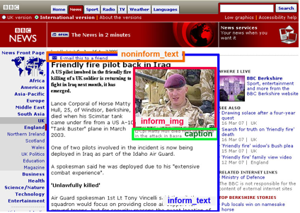
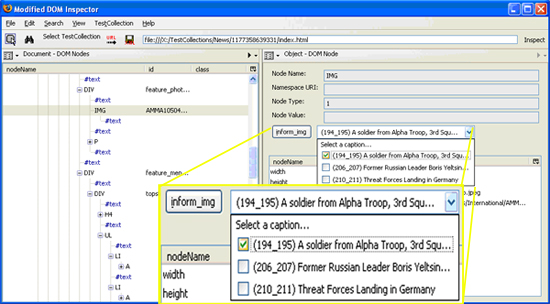

 In order to evaluate the performance of information retrieval and extraction algorithms, we need test collections. A test collection consists of a set of documents, a clearly formed problem that an algorithm is supposed to provide solutions to, and the answers that the algorithm should produce when executed on the documents. Defining the association between elements in the test collection and answers is known as labeling. For mainstream information retrieval problems, there are publicly available test collections which have been maintained for years. However, the scope of these problems, and thus the associated test collections, is limited. In other cases, researchers need to build, label, and manage their own test collections, which can be a tedious and error-prone task. Also, there are no public repository spaces to store those collections for sharing among research community.
 To lighten researchers� burden of building their own test collections, we are developing a test collection digital library system (TCDLS). A systematic mechanism for building test collections enforces consistency in labeling practices, reducing errors and increasing validity. While the present research is developed to meet our needs for information extraction algorithm and test collection development, we have worked to develop an infrastructural system that fosters further development of test collections and infrastructure across the research community, enabling the expansion of research.
Publicy available Test Collection collected and labeled with TCDLS. We currently collected 239 article pages from news sites, which are 80 pages from CNN, 52 from the BBC, 54 from ABC, and 53 from Scientific American. We also collected index pages from same sites. They are 27 pages from CNN, 77 pages from BBC, 23 from ABC, 36 from NYTimes, and 15 pages from Scientific American. We call this test data set as news collection. We created another test data set calls research collection. In this collection, we collected pages about research from university labs and from research center sites such NSF, PARC, Microsoft Research, IBM Research, and Los Alamos Laboratory. We collected 151 research article pages and 103 research index pages.
The TCDLS is used to label components in each test document, by clicking labeling buttons. We labeled informative text, informative images, and caption text to associate with the informative images. We also labeled non-informative text and images. The label information is stored in XML, and it is used to evaluate information extraction algorithms that recognize informative components in each document.
publications
 Koh, E., Kerne, A., Berry, S.,
Test Collection Management and Labeling System,
Proc ACM DocEng 2009,
Munich, Germany, Sept 16-18.
Koh, E., Kerne, A., Berry, S.,
Test Collection Management and Labeling System,
Proc ACM DocEng 2009,
Munich, Germany, Sept 16-18.